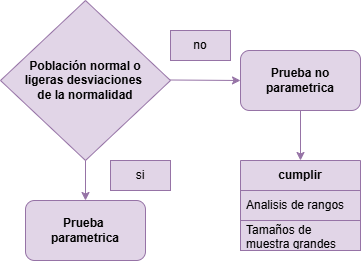

Pruebas no paramétricas

Prueba Chi cuadrado
Tiene diferentes usos entre los que se encuentran
- Determinar si una variable categórica sigue o no, una distribución hipotética, como la binomial o la poisson.
El juego de hipótesis es:
\(H_0:\) Los datos analizados siguen una distribución M.
\(H_1:\) Los datos analizados no siguen una distribución M
Grados de libertad
\[gl=\quad k \quad observaciones-\quad t\quad parametros \quad estimados\quad -1\]
- Evaluar si una variable es independiente de la otra: Dos variables aleatorias X e Y son llamadas independientes, si la distribución de probabilidad de una de las variables no es afectada por la presencia de la otra.
El juego de hipótesis es:
\(H_o:\) Las variables son independientes, una variable no varía entre los distintos niveles de la otra variable.
\(H_a:\) Las variables son dependientes, una variable varía entre los distintos niveles de la otra variable.
Grados de libertad
\[df=(columnas−1)*(filas−1)\]
- Comparar si dos distribuciones de probabilidad se desempeñan de las misma manera
El juego de hipótesis es:
\(H_o:\) la distribución de probabilidad de x es similar a y.
\(H_a:\) la distribución de probabilidad de x no es similar a y.
En todos los casos el estadístico corresponde a:
\[ \large \chi^2=\sum_{i,j}^n \frac {(o_{ij}-e_{ij})^2}{e_{ij}}\]
Asuma que:
\(Oij\) es la frecuencia observada de eventos que pertenecen a la i−ésima categoría de X y la j−ésima categoría de Y.
\(e_{ij}\) es la frecuencia esperada si X e Y son independientes.
Videos ejemplo
Prueba chi cuadrado para la independencia de dos distribuciones
Prueba de bondad de ajuste para la distribución de probabilidad binomial
Prueba de bondad de ajuste para la distribución de probabilidad poisson
Ejemplo En un supermercado se está estudiando el comportamiento del número de personas que llegan cada hora. Se analizaron 20 horas, cuyos datos se consignan a continuación:
Análisis exploratorio Se analiza los gráficos para determinar una distribución hipotética.
personas<-c(13, 14, 14, 19, 17, 14, 13, 9, 16, 16,13, 13, 15, 13, 7, 14, 14, 13, 20, 15)
mean(personas)## [1] 14.1par(mfrow=c(1,2))
hist(personas, xlab = "personas", ylab = "Frecuencia", las=1, main = "", col = "gray")
plot(density(personas), xlab = "personas", ylab = "Densidad", las=1, main = "")
En este caso, la variable de interés registra un número de eventos por unidad de tiempo, por lo que se sugiere analizar el ajuste a una distribución poisson. Se muestra la respectiva prueba de hipótesis. Sea X el número de clientes que visitan Celia Express.
\(H_0:X_i∼Poisson\)
\(H_1:X_i≁Poisson\)
Manualmente
Los valores se agrupan en una tabla de frecuencias
| Clientes/hora | Frec obs | prob | frec esp | (obs-esp)^2/esp |
|---|---|---|---|---|
| 9 | 2 | 0.048 | 0.96 | 1.1 |
| 13 | 6 | 0.106 | 2.12 | 7.1 |
| 14 | 5 | 0.105 | 2.12 | 3.9 |
| 15 | 2 | 0.098 | 1.97 | 0 |
| 16 | 2 | 0.085 | 1.72 | 0 |
| 17 | 3 | 0.07 | 1.41 | 1.8 |
| total | 20 | 13.9 |
el valor del promedio \(\lambda\) se estima asi: \[\lambda=\frac{(9*2)+(13*6)+(14*5)+(15*2)+(16*2)+(17*3)}{20}=13.95\]
A partir de este valor se estima la probabilidad de cada uno de ellos según la distribución de probabilidad poisson
\[p(x=9)=\frac{e^{-\lambda}\lambda^x}{x!}=\frac{e^{-13.95}13.95^9}{9!}=0.048\]
La frecuencia esperada se obtiene de multiplicar cada valor de probabilidad por 20.
El valor del estadístico es 13.9 los grados de libertad de la distribución está dado por:
gl=observaciones- k (parámetros estimados)-1
\[P(\chi^2_4>13.9)=0.0075 \] rechaza la hipotesis nula y se concluye que los datos no se distribuye poisson
En Rstudio
Para estimar los parámetros de una distribución de probabilidad discreta (poisson y binomial), se requiere la función goodfit del paquete vcd. Esta función también realiza la prueba de bondad de ajuste y sus argumentos son: variable de interés, tipo de distribución y método. Se usará el test de Chi-cuadradado a través del argumento “MinChisq”
require(vcd)## Cargando paquete requerido: vcd## Warning: package 'vcd' was built under R version 4.5.3## Cargando paquete requerido: gridgf<-goodfit(personas, type = "poisson", method = "MinChisq")
gf$par## $lambda
## [1] 13.60833summary(gf)## Warning in summary.goodfit(gf): Chi-squared approximation may be incorrect##
## Goodness-of-fit test for poisson distribution
##
## X^2 df P(> X^2)
## Pearson 19.30042 19 0.4377217chisq.test(personas)##
## Chi-squared test for given probabilities
##
## data: personas
## X-squared = 11.333, df = 19, p-value = 0.9121Ejemplo Comparación de distribuciones
Retomando el ejemplo de el ph de agua potable y no potable
\(H_0:X_{si}∼y_{no}\)
\(H_1:X_{si}≁y_{no}\)
Ejemplo en R:
Se usan los datos de la base survey de la librería MASS de R, que corresponden a 237 observaciones provenientes de una encuesta a estudiantes de estadística de una Universidad en Australia.
- Valide la hipótesis de si el hábito de fumar es independiente del nivel de ejercicios de los estudiantes usando un nivel de significancia del 0.05.
El juego de hipotesis es:
\(H_o:\) El hábito de fumar es independiente de hacer ejercicio
\(H_a:\) El hábito de fumar es dependiente de hacer ejercicio
## Para inst lar librerías use
# install.packages("MASS")
## Para llamar la librería
library(MASS)
library(DT)## Warning: package 'DT' was built under R version 4.5.3## se usan las variables
## FUMA (Smoke) con los niveles: Heavy, Regul, Occas y Never
## EJERCICIO (Exer) con los niveles: Freq, Some, y None
##se tabulan
tbl=table(survey$Smoke,survey$Exer)
tbl##
## Freq None Some
## Heavy 7 1 3
## Never 87 18 84
## Occas 12 3 4
## Regul 9 1 7chisq.test(tbl)## Warning in chisq.test(tbl): Chi-squared approximation may be incorrect##
## Pearson's Chi-squared test
##
## data: tbl
## X-squared = 5.4885, df = 6, p-value = 0.4828#Note que aparece un mensaje de alerta. Esto es debido a que en algunas celdas las
#frecuencias son muy pequeñas. Podemos solucionar esto agrupando algunas columnas.
ctbl = cbind(tbl[,"Freq"], tbl[,"None"] + tbl[,"Some"])
ctbl## [,1] [,2]
## Heavy 7 4
## Never 87 102
## Occas 12 7
## Regul 9 8chisq.test(ctbl)##
## Pearson's Chi-squared test
##
## data: ctbl
## X-squared = 3.2328, df = 3, p-value = 0.3571mosaicplot(ctbl,
main = "Mosaic plot",
color = TRUE
)
fuerza de asociación
library(vcd)
assocstats(x = tbl)## X^2 df P(> X^2)
## Likelihood Ratio 5.8015 6 0.44579
## Pearson 5.4885 6 0.48284
##
## Phi-Coefficient : NA
## Contingency Coeff.: 0.151
## Cramer's V : 0.108Pruebas de independencia de las distribuciones
Se utilizan cuando se quiere estudiar si existe asociación entre dos variables cualitativas, es decir, si las proporciones de una variable son diferentes dependiendo del valor que adquiera la otra variable.
Existen dos tipos de pruebas de independencia, la prueba chi cuadrado y la prueba exacta de fisher. La prueba de Chi-cuadrado se utiliza cuando la muestra es suficientemente grande. La prueba exacta de Fisher se utiliza cuando la muestra es pequeña.
La prueba de Chi-cuadrado no es adecuada cuando los valores esperados en una de las celdas de la tabla de contingencia son menores a 5; en este caso, se prefiere la prueba exacta de Fisher (McCrum-Gardner, 2008; Bower, 2003).
El juego de hipótesis es:
\(H_o:\) Las variables son independientes, una variable no varía entre los distintos niveles de la otra variable.
\(H_a:\) Las variables son dependientes, una variable varía entre los distintos niveles de la otra variable.
Test exacto de fisher
Se aplica para comparar dos variables categóricas con dos niveles cada una (tabla 2x2), está diseñado para situaciones en las que las frecuencias marginales de filas y columnas (los totales de cada fila y columna) son fijas, se conocen de antemano. Esta condición es relevante en los experimentos biológicos ya que no es común poder cumplirla. Si esta condición no se satisface el test de Fisher deja de ser exacto, por lo general pasando a ser más conservativo.
Ejemplo de experimentos con y sin frecuencias marginales fijas:
Frecuencias marginales fijas:
Supóngase que se quiere saber si la preferencia que tienen dos especies de pájaros (estorninos y gorriones) para refugiarse en casetas artificiales es diferente dependiendo del material de fabricación (madera o metal). Para ellos se disponen en una pajarera 5 casetas de metal y 5 de madera y se sueltan en el interior de la jaula 4 gorriones y 6 estorninos. En este experimento se sabe que las frecuencias marginales van a ser 5, 5, 4, 6 lo que no se sabe es como se van a distribuir las observaciones dentro de la tabla.
| Pájaro | Metal | Madera | total |
|---|---|---|---|
| Gorrión | ? | ? | 4 |
| Estornino | ? | ? | 6 |
| Total | 5 | 5 | 10 |
Frecuencias marginales no fijas:
Supóngase que se quiere determinar si un fármaco acelera la cicatrización. Para ello se selecciona a 50 pacientes que se reparten aleatoriamente en dos grupos iguales (tratamiento y placebo), tras una semana de tratamiento se determina si la cicatrización ha finalizado (si / no). En este caso las frecuencias marginales de los tratamientos son fijas, 25 para cada grupo, sin embargo no se sabe cuántos en cada grupo van a haber cicatrizado o no, por lo que las frecuencias marginales del resultado de cicatrización no son fijas.
| Tratamiento | cicatrizado | No cicatrizado | total |
|---|---|---|---|
| placebo | ? | ? | 25 |
| Tratamiento | ? | ? | 25 |
| Total | ? | ? | 50 |
Condiciones del test
Independencia,las observaciones de la muestra deben ser independientes unas de otras.
Muestreo aleatorio.
Tamaño de la muestra < 10% población.
Cada observación contribuye únicamente a uno de los niveles.
Las frecuencias marginales de columnas y filas tienen que ser fijas. Si esta condición no se cumple, el test de Fisher deja de ser exacto.
Cálculo del p-value
El test exacto de Fisher se basa en la distribución hipergeométrica, que permite calcular la probabilidad exacta de obtener una determinada distribución de eventos dentro de una tabla. Supóngase la siguiente tabla de contingencia:
| Niveles | Nivel A1 | Nivel A2 | total |
|---|---|---|---|
| Nivel B1 | a | b | a+b |
| Nivel B2 | c | d | c+d |
| Total | a+c | b+d | n |
n=a+b+c+d
\[p= \frac{{a+b\choose a}\,{c+d\choose c}}{{n\choose a+c}}= \frac{(a+b)!(c+d)!(a+c)!(b+d)!}{a!b!c!d!n!}\] El test de Fisher calcula las probabilidades de todas las posibles tablas y suma las de aquellas tablas que tengan probabilidades menores o iguales que la tabla observada, generando así el p-value de dos colas.
Ejemplo Se quiere estudiar si la reacción alérgica a un compuesto y una determinada mutación en un gen están relacionados. Para ello se realiza un test alérgico sobre un grupo de individuos seleccionados al azar y se genotipa el estado del gen de interés ¿Existe un diferencia significativa en la incidencia de la mutación entre los alérgicos y no alérgicos?
datos <- data.frame( sujeto = c("No alérgico", "No alérgico", "No alérgico","No alérgico","alérgico","No alérgico","No alérgico", "alérgico", "alérgico","No alérgico","alérgico", "alérgico","alérgico", "alérgico", "alérgico","No alérgico", "No alérgico", "No alérgico","No alérgico","alérgico", "alérgico","alérgico", "alérgico", "No alérgico","alérgico", "No alérgico", "No alérgico","alérgico","alérgico", "alérgico"),
mutacion = c(FALSE,FALSE,FALSE,FALSE,TRUE,FALSE,FALSE, FALSE, TRUE,TRUE,TRUE,TRUE,TRUE,TRUE, FALSE,FALSE,TRUE,FALSE,TRUE, FALSE,TRUE,FALSE,FALSE, FALSE, TRUE, FALSE, FALSE, TRUE, FALSE, TRUE))
head(datos)## sujeto mutacion
## 1 No alérgico FALSE
## 2 No alérgico FALSE
## 3 No alérgico FALSE
## 4 No alérgico FALSE
## 5 alérgico TRUE
## 6 No alérgico FALSEEl juego de hipotesis es:
\(H_o:\) La alergia es independiente de la presencia del gen
\(H_a:\) La alergia es dependiente de la presencia del gen
La tabla de frecuencias es
El test de Fisher trabaja con frecuencia de eventos, por lo tanto con tablas de contingencia en las que se sumariza el número de eventos de cada tipo.
tabla <- table(datos$sujeto, datos$mutacion, dnn = c("Sujeto", "Estado gen"))
tabla## Estado gen
## Sujeto FALSE TRUE
## alérgico 6 10
## No alérgico 11 3fisher.test(x = tabla, alternative = "two.sided")##
## Fisher's Exact Test for Count Data
##
## data: tabla
## p-value = 0.03293
## alternative hypothesis: true odds ratio is not equal to 1
## 95 percent confidence interval:
## 0.02195148 1.03427479
## sample estimates:
## odds ratio
## 0.1749975Fuerza de asociación entre variables cualitativas (tamaño del efecto)
Dado que las pruebas contrastan si las variables están relacionadas, al tamaño del efecto se le conoce como fuerza de asociación. Existen múltiples medidas de asociación, entre las que destacan phi o Cramer’s V.
library(vcd)
assocstats(x = tabla)## X^2 df P(> X^2)
## Likelihood Ratio 5.3356 1 0.020894
## Pearson 5.1293 1 0.023525
##
## Phi-Coefficient : 0.413
## Contingency Coeff.: 0.382
## Cramer's V : 0.413En este ejemplo no se satisface la condición de frecuencias marginales fijas y por lo tanto el test de Fisher no es exacto. Aun así, hay evidencias para rechazar la H0 y considerar que las dos variables sí están relacionadas. El tamaño de la fuerza de asociación (tamaño de efecto) cuantificado por phi o Cramer’s V es mediano.
mosaicplot(tabla,
main = "Mosaic plot",
color = TRUE
)
Prueba de diferencias entre dos poblaciones con relación a la mediana
si dos muestras comparadas proceden de la misma población, al juntar todas las observaciones y ordenarlas de menor a mayor, cabría esperar que las observaciones de una y otra muestra estuviesen intercaladas aleatoriamente.
library(ggplot2)
set.seed(567)
datos <- data.frame(muestra = rep(c("A", "B"), each = 10),
valor = rnorm(n = 20, mean = 10, sd = 5),
cordenada_y = rep(0, 20))
ggplot(data = datos, aes(x = valor, y = cordenada_y)) +
geom_point(aes(colour = muestra), size = 3) +
ylab("") + xlab("rango") +
theme_bw() +
theme(axis.text.y = element_blank()) +
ggtitle("Muestras procedentes de la misma población")
Por lo contrario, si una de las muestras pertenece a una población con valores mayores o menores que la otra población, al ordenar las observaciones, estas tenderán a agruparse de modo que las de una muestra queden por encima de las de la otra.
set.seed(567)
datos <- data.frame(muestra = rep(c("A", "B"), each = 10),
valor = c(rnorm(n = 10, mean = 10, sd = 5), rnorm(n = 10, mean = 20, sd = 5)),
cordenada_y = rep(0, 20))
ggplot(data = datos, aes(x = valor, y = cordenada_y)) +
geom_point(aes(colour = muestra), size = 3) +
ylab("") + xlab("rango") +
theme_bw() +
theme(axis.text.y = element_blank()) +
ggtitle("Muestras procedentes de distintas poblaciones")
Las pruebas no paramétricas que veremos a continuación prueban la mediana de un conjunto de datos, o las medianas dos conjuntos de datos, la prueba de hipotesis es
Hipótesis nula \(H_0\)
\[\Large H_0:M_e=M_o\]
Hipótesis alternativa \(H_1\)
| cola superior | cola inferior | cola doble |
|---|---|---|
| \(\Large H_0:M_e>M_o\) | \(\Large H_0:M_e<M_o\) | \(\Large H_0:M_e\neq M_o\) |
Prueba de signo
si la distribución de un conjunto de datos es simétrica, la media y la mediana de la población son iguales. Al probar la hipótesis nula \(H_0\) de que \(M_e=M_o\) en comparación con la hipótesis alternativa adecuada, con base en una muestra aleatoria de tamaño n, reemplazamos cada valor de la muestra que exceda a \(M_e\) con un signo más, y cada valor de la muestra menor que \(M_e\) con un signo menos. Si la hipótesis nula es verdadera y la población es simétrica, la suma de los signos más debería ser casi igual a la suma de los signos menos.
Estadístico
\(R^+:\) Numero de diferencias positivas encontradas en el experimento
\[R^+\sim B(n,p) \quad R^+={0,1,2,3...n}\] n: cantidad de veces q se repite el experimento aleatorio
E: diferencia positiva
\(p=P(E)=\frac{1}{2}\) Probabilidad de encontrar una diferencia positiva
\(f(x)\) Probabilidad de encontrar x diferencias positivas
\[f(x)=P(R^+=x)=\displaystyle{n \choose x}p^x q^{n-x}=\displaystyle{n \choose x}*{\left (\frac{1}{2} \right)}^n\] Siempre que n>10, las probabilidades binomiales con p=1/2 se pueden aproximar a partir de la curva normal, ya que np=nq>5.
\[μ=np\quad sd=\sqrt{npq}\]
valor p
| condición | fórmula |
|---|---|
| \(r^+<\frac{n}{2}\) | \(k*P \left (x\leq r^+|p=\frac{1}{2}\right)\) |
| \(r^+>\frac{n}{2}\) | \(k*P \left (x\geq r^+|p=\frac{1}{2}\right)\) |
| prueba unilateral | \(k=1\) |
| prueba bilateral | \(k=2\) |
Ejemplo
Los siguientes datos representan el número de horas que funciona una guadaña antes de requerir una recarga:
1.5, 2.2, 0.9, 1.3, 2.0, 1.6, 1.8, 1.5, 2.0, 1.2, 1.7
A un nivel de significancia de 0.05 utilice la prueba de signo para probar la hipótesis de que la guadaña funciona con una mediana de 1.8 horas antes de requerir una recarga.
Solución:
1. juego de hipótesis
\[H_0: Me= 1.8\] \[H1: M_e≠ 1.8\]
3. α = 0.05
4. Cálculos:
Al reemplazar cada valor con el símbolo “+” si excede 1.8, con el símbolo “–” si es menor que 1.8 y descartar las mediciones que sean iguales a 1.8, obtenemos la siguiente secuencia
| \(X_i\) | \(x_i-M_e=x_i-1.8\) | signo |
|---|---|---|
| 1.5 | -0.3 | - |
| 2.2 | 0.4 | + |
| 0.9 | -0.9 | - |
| 1.3 | -0.5 | - |
| 2.0 | 0.2 | + |
| 1.6 | -0.2 | - |
| 1.8 | 0 | 0 |
| 1.5 | -0.3 | - |
| 2.0 | 0.2 | + |
| 1.2 | -0.6 | - |
| 1.7 | -0.1 | - |
\[n=9 \quad r^+=3 \quad n/2=4.5\quad k=2\]
5. Estadístico de prueba
como \(r^+<\frac{n}{2} \quad 3<4.5\) la fórmula es:
\[k*P \left (x\leq r^+|p=\frac{1}{2}\right)\] \[2*P(x\leq 3)=2*\sum_{x=0}^3 \displaystyle{10 \choose x}0.5^x 0.5^{10-x}\] \[2*\sum_{x=0}^3 \displaystyle{10 \choose x}*{\left (\frac{1}{2} \right)}^{10}=0.3437\] 6. Decisión:
No se rechaza la hipótesis nula y se concluye que la mediana del tiempo de funcionamiento no difiere significativamente de 1.8 horas.
En R
library(BSDA)## Warning: package 'BSDA' was built under R version 4.5.2## Cargando paquete requerido: lattice##
## Adjuntando el paquete: 'BSDA'## The following object is masked from 'package:vcd':
##
## Trucks## The following object is masked from 'package:datasets':
##
## Orangex1<-c(1.5,2.2,0.9,1.3,2.0,1.6,1.8,1.5,2.0,1.2,1.7)
med<-median(x1)
SIGN.test(x1, md =1.8, alternative = "two.sided", conf.level = 0.95)##
## One-sample Sign-Test
##
## data: x1
## s = 3, p-value = 0.3437
## alternative hypothesis: true median is not equal to 1.8
## 95 percent confidence interval:
## 1.271273 2.000000
## sample estimates:
## median of x
## 1.6
##
## Achieved and Interpolated Confidence Intervals:
##
## Conf.Level L.E.pt U.E.pt
## Lower Achieved CI 0.9346 1.3000 2
## Interpolated CI 0.9500 1.2713 2
## Upper Achieved CI 0.9883 1.2000 2Otro ejemplo
Una empresa de taxis intenta decidir si utilizar neumáticos radiales en vez de neumáticos regulares con cinturón le serviría para ahorrar combustible. Se equipan 16 automóviles con neumáticos radiales y se conducen por un recorrido de prueba establecido. Después se equipan los mismos automóviles con los neumáticos regulares con cinturón y se hace que los mismos conductores vuelvan a realizar el recorrido de prueba.
El consumo de gasolina, en kilómetros por litro, se presenta en la siguiente tabla, ¿Podemos concluir a un nivel de significancia de 0.05 que los automóviles equipados con neumáticos radiales ahorran más combustible que los equipados con neumáticos regulares con cinturón?
NOTA Los neumáticos radiales, con capas dispuestas a 90° y cinturones de acero, ofrecen mayor flexibilidad, tracción y durabilidad, siendo ideales para el uso diario en carretera y el ahorro de combustible. En contraste, los neumáticos convencionales (diagonales o con cinturón) tienen estructuras más rígidas, indicados para cargas pesadas, terrenos irregulares o maquinaria.
los radiales son superiores para la conducción diaria y el confort en carretera. Los neumáticos convencionales con cinturón ofrecen un terreno medio, siendo más resistentes a impactos en los flancos, pero con un rendimiento inferior en suavidad y eficiencia.
| Automóvil | 1 | 2 | 3 | 4 | 5 | 6 | 7 | 8 | 9 | 10 | 11 | 12 | 13 | 14 | 15 | 16 | |||
|---|---|---|---|---|---|---|---|---|---|---|---|---|---|---|---|---|---|---|---|
| Neumáticos radiales | 4,2 | 4,7 | 6,6 | 7 | 6,7 | 4,5 | 5,7 | 6 | 7,4 | 4,9 | 6,1 | 5,2 | 5,7 | 6,9 | 6,8 | 4,9 | |||
| Neumáticos con cinturón | 4,1 | 4,9 | 6,2 | 6,9 | 6,8 | 4,4 | 5,7 | 5,8 | 6,9 | 4,9 | 6 | 4,9 | 5,3 | 6,5 | 7,1 | 4,8 | |||
| diferencia | 0,1 | -0,2 | 0,4 | 0,1 | -0,1 | 0,1 | 0 | 0,2 | 0,5 | 0 | 0,1 | 0,3 | 0,4 | 0,4 | -0,3 | 0,1 | |||
| signo | + | - | + | + | - | + | na | + | + | na | + | + | + | + | - | + |
- Realice la prueba de signos
- Realice la prueba de rangos con signos de wilcoxon
- Realice la prueba de suma de rangos de wilcoxon
En rstudio
library(BSDA)
rad=c(4.2,4.7,6.6,7,6.7,4.5,5.7,6,7.4,4.9,6.1,5.2,5.7,6.9,6.8,4.9)
cin=c(4.1,4.9,6.2,6.9,6.8,4.4,5.7,5.8,6.9,4.9,6,4.9,5.3,6.5,7.1,4.8)
##Pueba de signos
SIGN.test(rad,cin, alternative = "two.sided", conf.level = 0.95)##
## Dependent-samples Sign-Test
##
## data: rad and cin
## S = 11, p-value = 0.05737
## alternative hypothesis: true median difference is not equal to 0
## 95 percent confidence interval:
## 0.0000000 0.3482747
## sample estimates:
## median of x-y
## 0.1
##
## Achieved and Interpolated Confidence Intervals:
##
## Conf.Level L.E.pt U.E.pt
## Lower Achieved CI 0.9232 0 0.3000
## Interpolated CI 0.9500 0 0.3483
## Upper Achieved CI 0.9787 0 0.4000## Prueba de rangos con signos
wilcox.test(rad,cin,paired=TRUE) ## Warning in wilcox.test.default(rad, cin, paired = TRUE): cannot compute exact
## p-value with ties## Warning in wilcox.test.default(rad, cin, paired = TRUE): cannot compute exact
## p-value with zeroes##
## Wilcoxon signed rank test with continuity correction
##
## data: rad and cin
## V = 85.5, p-value = 0.04063
## alternative hypothesis: true location shift is not equal to 0## Prueba de suma de rangos
wilcox.test(rad,cin,paired=FALSE) ## Warning in wilcox.test.default(rad, cin, paired = FALSE): cannot compute exact
## p-value with ties##
## Wilcoxon rank sum test with continuity correction
##
## data: rad and cin
## W = 136, p-value = 0.7768
## alternative hypothesis: true location shift is not equal to 0Prueba de rangos con signo de wilcoxon
Compara el rango medio de dos muestras relacionadas y determina si existen diferencias entre ellas.
Se utiliza para dos muestras pareadas, tiene en cuenta el signo y valor de la diferencia entre pares.
Condiciones
Datos independientes y ordenados
No es necesario asumir que las muestras se distribuyen normal. La distribución de las diferencias debe ser simétrica
Trabaja con medianas no con medias
Hipótesis nula \(H_0\)
\[\Large H_0:M_1=M_2\]
Hipótesis alternativa \(H_1\)
| Cola | Superior | Inferior | doble |
|---|---|---|---|
| \(\Large H_0\) | \(\Large M_e>M_o\) | \(M_e<M_o\) | $ H_0:M_e |
Criterio de rechazo \(T<T_{tabla}\)
Hipótesis:
En este caso la hipótesis nula consiste en afirmar que las poblaciones a la cual pertenecen ambos resultados es la misma o son idénticas. Esto es equivalente a formularlas de la siguiente manera:
Ho: El criterio aplicado no tiene efecto significativo en la muestra
H1: El criterio aplicado sí tiene efecto significativo en la muestra
Nivel de significación: α
Procedimiento:
Calcular Di = Xi – Yi
Tomar el valor absoluto de ellas. De preferencia colocarlas en otra columna, acompañado de la identificación del número de elemento
Ordenarlo de menor a mayor con la columna de identificación
Asignarle un rango a cada elemento ordenado. Si un rango se repite k veces, el rango asignado a cada elemento que se repite será el promedio de los siguientes rangos. La siguiente diferencia tendrá por rango el número de rango que corresponda, si no hubiera habido repetición.
Identificar el rango a cada diferencia original (sin el valor absoluto)
Asignarle el signo positivo o negativo según el valor de la diferencia
Sumar todos los valores de los rangos positivos y los negativos
Elegir el mínimo de estas sumas. Este será el estadístico.
Ejemplo
Los siguientes datos representan el número de horas que un compensador opera antes de requerir una recarga:
| dato |
|---|
| 1.5 |
| 2.2 |
| 0.9 |
| 1.3 |
| 2.0 |
| 1.6 |
| 1.8 |
| 1.5 |
| 2.0 |
| 1.2 |
| 1.7 |
Utilice la prueba de rango con signo para probar la hipótesis en el nivel de significancia de 0.05 que este compensador particular opera con una media de 1.8 horas antes de requerir una recarga.
Solución:
El juego de hipotesis es: \[H_0 = 1.8\]
\[H_1=1.8\]
Se procederá a efectuar las diferencias y a poner rango con signo a los datos.
Dato
di = dato - 1.8
| Dato | di | valor abs | jerarquia asignada |
|---|---|---|---|
| 1,5 | -0,3 | 0,3 | -5,5 |
| 2,2 | 0,4 | 0,4 | 7 |
| 0,9 | -0,9 | 0,9 | -10 |
| 1,3 | -0,5 | 0,5 | -8 |
| 2 | 0,2 | 0,2 | 3 |
| 1,6 | -0,2 | 0,2 | -3 |
| 1,8 | 0 | 0 | ninguna |
| 1,5 | -0,3 | 0,3 | -5,5 |
| 2 | 0,2 | 0,2 | 3 |
| dif abs ordenada | 0 | 0,1 | 0,2 | 0,2 | 0,2 | 0,3 | 0,3 | 0,4 | 0,5 |
|---|---|---|---|---|---|---|---|---|---|
| jerarquia | 0 | 1 | 2 | 3 | 4 | 5 | 6 | 7 | 8 |
| jerarquia reasignada | - | 1 | 3 | 3 | 3 | 5.5 | 5.5 | 7 | 8 |
Regla de decisión:
Para n = 10, después de descartar la medición que es igual a 1.8, la tabla muestra que la región crítica es w=8.
Cálculos:
w+ = 7 + 3 + 3 = 13
w- = 5.5 + 10 + 8 + 3 + 5.5 + 9 + 1 = 42
por lo que w = 13 (menor entre w+ y w-).
Decisión y Conclusión:
Como 13 no es menor que 8, no se rechaza H0 y se concluye con un = 0.05 que el tiempo promedio de operación no es significativamente diferente de 1.8 horas.
En rstudio
y1=c(1.5,2.2,0.9,1.3, 2,1.6,1.8,1.5,2,1.2,1.7)
y2=rep(1.8,times=11)
wilcox.test(y1,y2,paired=TRUE) ## Warning in wilcox.test.default(y1, y2, paired = TRUE): cannot compute exact
## p-value with ties## Warning in wilcox.test.default(y1, y2, paired = TRUE): cannot compute exact
## p-value with zeroes##
## Wilcoxon signed rank test with continuity correction
##
## data: y1 and y2
## V = 13, p-value = 0.1522
## alternative hypothesis: true location shift is not equal to 0SIGN.test(y1,y2, alternative = "two.sided", conf.level = 0.95)##
## Dependent-samples Sign-Test
##
## data: y1 and y2
## S = 3, p-value = 0.3437
## alternative hypothesis: true median difference is not equal to 0
## 95 percent confidence interval:
## -0.5287273 0.2000000
## sample estimates:
## median of x-y
## -0.2
##
## Achieved and Interpolated Confidence Intervals:
##
## Conf.Level L.E.pt U.E.pt
## Lower Achieved CI 0.9346 -0.5000 0.2
## Interpolated CI 0.9500 -0.5287 0.2
## Upper Achieved CI 0.9883 -0.6000 0.2Prueba de la suma de rangos de Wilcoxon
Su uso no se restringe a poblaciones no normales. pero esta prueba siempre es superior a la prueba t para poblaciones no normales
Se puede utilizar en vez de la prueba t de dos muestras cuando las poblaciones son normales, aunque la potencia será menor.
Condiciones
Identifica diferencias entre dos poblaciones que no son normales.
Análisis de dos muestras independientes que no están emparejadas.
Juego de hipótesis:
Ho: Las muestras provienen de la misma población.
H1: Las muestras provienen de poblaciones diferentes.
Procedimiento:
Luego de disponer de las dos muestras, sea n1 el tamaño de la primera muestra y n2 el tamaño de la segunda muestra.:
Apilar los datos en una sola columna
Ordenar las dos columnas de menor a mayor
Asignar el rango o jerarquia a cada uno de los datos ordenados.
criterio de asignación: Cuando el dato se repite, se suman todas las repeticiones y se divide entre el número de datos repetidos, dicho resultado será el rango de todos ellos. El siguiente dato no repetido tendrá por rango el valor entero que le correspondería si no hubiera habido repeticiones.
- Se suman todos los valores de los rangos correspondientes a la misma muestra. Supongamos que estas sumas son S1 y S2, respectivamente.
Estadísticos a calcular
\[U_1=n_1*n_2+\frac{1}{2}n_1(n_1+1)-s_1\] \[U_2=n_1*n_2+\frac{1}{2}n_2(n_2+1)-s_2\] \[U=min{U_1,U_2}\] Media: \[\mu=\frac{n_1*n_2}{2}\]
Varianza: \[\sigma^2=\frac{1}{12}n_1*n_2(n_1+n_2+1)\] estadístico de prueba: \[T_c=\frac{U-\mu_U}{\sigma}\]
- Criterio de decisión: Si el valor absoluto de TC es mayor el valor crítico Zα, rechazaremos la hipótesis nula; es decir, las muestras no proviene de la misma población o las poblaciones de donde provienen no son iguales.
Ejemplo Prueba de wilcoxon en R
Las membranas fetales (amnios y corion) forman un saco delgado y resistente que rodea al feto. Aunque su espesor es mínimo, se asume un grosor de aproximadamente 0.6 mm en el interior del útero hacia el final del embarazo. Estas membranas son esenciales para la protección y contención del líquido amniótico.
Los siguientes datos corresponden a medidas del grosor de las membranas fetales medida a las 12 y 26 semanas de edad gestacional.
- Realice un analisis descriptivo y verifique la normalidad en los conjuntos de datos
| **** | c12 | c26 |
|---|---|---|
| **** | 0.8 | 1.15 |
| **** | 0.83 | 0.88 |
| **** | 1.89 | 0.9 |
| **** | 1.04 | 0.74 |
| **** | 1.45 | 1.21 |
| **** | 1.38 | |
| **** | 1.91 | |
| **** | 1.64 | |
| **** | 0.73 | |
| **** | 1.46 | |
| media | 1.313 | 0.976 |
| mediana | 1.415 | 0.9 |
| desv estándar | 0.441 | 0.197 |
c12=c(0.80, 0.83, 1.89, 1.04, 1.45, 1.38, 1.91, 1.64, 0.73, 1.46)
c26=c(1.15, 0.88, 0.90, 0.74, 1.21)
# Para la constante a las 12 semanas
require(car)## Cargando paquete requerido: car## Cargando paquete requerido: carData##
## Adjuntando el paquete: 'carData'## The following objects are masked from 'package:BSDA':
##
## Vocab, Woollibrary(nortest)## Warning: package 'nortest' was built under R version 4.5.2par(mfrow=c(1,4))
hist(c12, xlab = "Tiempo", ylab = "Frecuencia", las=1, main = "", col = "gray")
qqPlot(c12, col = "gray", ylab="Tiempo")## [1] 7 9plot(density(c12), xlab = "Tiempo", ylab = "Densidad", las=1, main = "")
boxplot(c12,c26, xlab = "Tiempo", ylab = "Densidad", las=1, main = "")
# Para la constante a las 26 semanas
par(mfrow=c(1,4))
hist(c26, xlab = "Tiempo", ylab = "Frecuencia", las=1, main = "", col = "gray")
qqPlot(c26, col = "gray", ylab="Tiempo")## [1] 4 5plot(density(c26), xlab = "Tiempo", ylab = "Densidad", las=1, main = "")
boxplot(c12,c26, xlab = "Tiempo", ylab = "Densidad", las=1, main = "")
- Pruebe mediante un juego de hipotesis y mediante la prueba de shapiro wilk, la normalidad del conjunto de datos
library(nortest)
##PRUEBA DE NORMALIDAD
shapiro.test(c12)##
## Shapiro-Wilk normality test
##
## data: c12
## W = 0.91129, p-value = 0.29shapiro.test(c26)##
## Shapiro-Wilk normality test
##
## data: c26
## W = 0.91538, p-value = 0.5006- Mediante la prueba de suma de rangos de wilcoxon pruebe la hipótesis de que la membrana es mayor a las 12 semanas que a las 26 semanas, con un nivel de significancia de 0.05
Pasos:
- Juego de hipótesis
\[ H_o:M_{e12 sem}=M_{e26 sem}\] \[ H_1:M_{e12 sem}>M_{e26 sem}\] 2. Nivel de significancia:\(\alpha=0.05\)
- Cálculos
| todos | pertenece | rango |
|---|---|---|
| 0.73 | c12 | 1 |
| 0.74 | c26 | 2 |
| 0.8 | c12 | 3 |
| 0.83 | c12 | 4 |
| 0.88 | c26 | 5 |
| 0.9 | c26 | 6 |
| 1.04 | c12 | 7 |
| 1.15 | c26 | 8 |
| 1.21 | c26 | 9 |
| 1.38 | c12 | 10 |
| 1.45 | c12 | 11 |
| 1.46 | c12 | 12 |
| 1.64 | c12 | 13 |
| 1.89 | c12 | 14 |
| 1.91 | c12 | 15 |
| Estadístico calculado | c12 | c26 |
|---|---|---|
| Suma Rango | 90 | 30 |
| Tamaño: | 10 | 5 |
| U | 15 | 35 |
| Determinación del estadístico U = | 15 | |
| Media de U = | 25 | |
| Varianza de U = | 66.66666667 | |
| Desviación de U = | 8.164965809 | |
| Cálculo del estadistico de la prueba = | -1.224744871 | |
| Valor crítico Z = | 1.96 | |
| desición | No rechazar Ho |
## Prueba de rango con signo
wilcox.test(x = c12, y = c26, alternative = "greater", mu = 0,
paired = FALSE, conf.int = 0.95) ##
## Wilcoxon rank sum exact test
##
## data: c12 and c26
## W = 35, p-value = 0.1272
## alternative hypothesis: true location shift is greater than 0
## 95 percent confidence interval:
## -0.08 Inf
## sample estimates:
## difference in location
## 0.305#prueba para saber si provienen de la misma distribución
ks.test(c12,c26)##
## Exact two-sample Kolmogorov-Smirnov test
##
## data: c12 and c26
## D = 0.6, p-value = 0.1658
## alternative hypothesis: two-sidedEjemplo en R
Se mide las concentraciones de cortisol en dos grupos de mujeres antes de dar a luz. Al grupo 1 se le practicó una cesárea de urgencias después de inducido el parto. Las del grupo 2, dieron a luz mediante operación cesárea o vía vaginal después de presentarse el trabajo de parto expontáneamente.
- Realice un analisis grafico para detectar si hay normalidad
2.Verifique normalidad en los conjuntos de datos usando α = 0.05.
4.Compruebe que ambos grupos de datos provienen de la misma distribución de probabilidad
\[H_0:grupo1∼grupo2\]
\[H_1:grupo1≁grupo2\]
###Ingresamos los datos como vectores de los dos grupos de madres
grupo1=c(411,466,432,409,381,363,449,483,438,381)
grupo2=c(584,553,516,688,650,590,574,700,831,688,478,689)
boxplot(grupo1,grupo2)
## Prueba de normalidad
shapiro.test(grupo1)##
## Shapiro-Wilk normality test
##
## data: grupo1
## W = 0.96658, p-value = 0.8575shapiro.test(grupo2)##
## Shapiro-Wilk normality test
##
## data: grupo2
## W = 0.95245, p-value = 0.673#prueba para saber si provienen de la misma distribución
ks.test(grupo1,grupo2)##
## Exact two-sample Kolmogorov-Smirnov test
##
## data: grupo1 and grupo2
## D = 0.91667, p-value = 3.402e-05
## alternative hypothesis: two-sided## Prueba de igualdad entre varinzas
var.test(grupo1,grupo2)##
## F test to compare two variances
##
## data: grupo1 and grupo2
## F = 0.16182, num df = 9, denom df = 11, p-value = 0.0108
## alternative hypothesis: true ratio of variances is not equal to 1
## 95 percent confidence interval:
## 0.04510143 0.63304938
## sample estimates:
## ratio of variances
## 0.1618194## prueba de diferencias entre medias
t.test (grupo1,grupo2,paired=FALSE,conf.level=0.95)##
## Welch Two Sample t-test
##
## data: grupo1 and grupo2
## t = -6.7277, df = 14.996, p-value = 6.787e-06
## alternative hypothesis: true difference in means is not equal to 0
## 95 percent confidence interval:
## -272.7363 -141.4970
## sample estimates:
## mean of x mean of y
## 421.3000 628.4167Conclusiones
- La prueba chi cuadrado tiene 3 diferentes aplicaciones, entre ellos se encuentran la Prueba de independencia, Prueba de bondad de ajuste y de Comparación de distribuciones**
Ejercicios propuestos
Prueba de signo y de rangos con signos de wilcoxon
- Se afirma que, si se le proporcionan ejemplos de problemas con antelacion, un estudiante puede aumentar en al menos 50 puntos su calificacion.
Para probar esta afirmacion se divide a un grupo de 20 estudiantes del ultimo ano en 10 pares, de manera que cada par tenga casi la misma calificacion promedio durante sus 3 primeros años en la universidad.
| ce | se |
|---|---|
| 531 | 509 |
| 621 | 540 |
| 663 | 688 |
| 579 | 502 |
| 451 | 424 |
| 660 | 683 |
| 591 | 568 |
| 719 | 748 |
| 543 | 530 |
| 575 | 524 |
Los ejemplos de problemas y las respuestas se proporcionan al azar a un miembro de cada par una semana antes del examen. Las calificaciones del examen se presentan en la sgte tabla.
Use la prueba de signo y de rango con signo de wilcoxon, para probar la hipotesis de si los estudiantes que hacen ejercicios mejoran la nota en almenos 50 puntos.
library(BSDA)
ce=c(531,621,663,579,451,660,591,719,543,575)
se=c(509,540,688,502,424,683,568,748,530,524)
SIGN.test(ce,se,alternative = "less", conf.level = 0.95,md=50)##
## Dependent-samples Sign-Test
##
## data: ce and se
## S = 3, p-value = 0.1719
## alternative hypothesis: true median difference is less than 50
## 95 percent confidence interval:
## -Inf 53.77333
## sample estimates:
## median of x-y
## 22.5
##
## Achieved and Interpolated Confidence Intervals:
##
## Conf.Level L.E.pt U.E.pt
## Lower Achieved CI 0.9453 -Inf 51.0000
## Interpolated CI 0.9500 -Inf 53.7733
## Upper Achieved CI 0.9893 -Inf 77.0000wilcox.test(ce,se,paired=TRUE,mu=50)## Warning in wilcox.test.default(ce, se, paired = TRUE, mu = 50): cannot compute
## exact p-value with ties##
## Wilcoxon signed rank test with continuity correction
##
## data: ce and se
## V = 10.5, p-value = 0.09239
## alternative hypothesis: true location shift is not equal to 50- Los siguientes datos representan el tiempo, en minutos, que un paciente tiene que esperar durante 12 visitas al consultorio de un médico antes de ser atendido:
| 17 | 15 | 20 | 20 | 32 | 28 | 12 | 26 | 25 | 25 | 35 | 24 |
Utilice la prueba de signo a un nivel de significancia de 0.05 para probar la afirmación del médico de que la mediana del tiempo de espera de sus pacientes no es mayor de 20 minutos.
rta x = 7 con valor P = 0.1719; no rechace H0
Utilice la prueba de rango de signo de wilcoxon a un nivel de significancia de 0.05 para probar la afirmación del médico de que la mediana del tiempo de espera de sus pacientes no es mayor de 20 minutos.
library(BSDA)
time=c(17,15,20,20,32,28,12,26,25,25,35,24)
ref=rep(20,12)
SIGN.test(time,ref,alternative = "less", conf.level = 0.95,md=20)##
## Dependent-samples Sign-Test
##
## data: time and ref
## S = 0, p-value = 0.0002441
## alternative hypothesis: true median difference is less than 20
## 95 percent confidence interval:
## -Inf 6.856364
## sample estimates:
## median of x-y
## 4.5
##
## Achieved and Interpolated Confidence Intervals:
##
## Conf.Level L.E.pt U.E.pt
## Lower Achieved CI 0.9270 -Inf 6.0000
## Interpolated CI 0.9500 -Inf 6.8564
## Upper Achieved CI 0.9807 -Inf 8.0000wilcox.test(time,ref,paired=TRUE,mu=20, alternative = "less")## Warning in wilcox.test.default(time, ref, paired = TRUE, mu = 20, alternative =
## "less"): cannot compute exact p-value with ties##
## Wilcoxon signed rank test with continuity correction
##
## data: time and ref
## V = 0, p-value = 0.001253
## alternative hypothesis: true location shift is less than 20- Un inspector de alimentos examina 16 latas de cierta marca de jamón para determinar el porcentaje de impurezas externas. Se registraron los siguientes datos:
| 2.4 | 2.3 | 3.1 | 2.2 | 2.3 | 1.2 | 1.0 | 2.4 | 1.7 | 1.1 | 4.2 | 1.9 | 1.7 | 3.6 | 1.6 | 2.3 |
Realice una prueba de signo a un nivel de significancia de 0.05 para probar la hipótesis nula de que la mediana del porcentaje de impurezas en esta marca de jamón es de 2.5%, en comparación con la hipótesis alternativa de que la mediana del porcentaje de impurezas no es de 2.5%.
x = 3 con valor P = 0.0244; rechace H0
Realice una prueba de rango de signo de wilcoxon a un nivel de significancia de 0.05 para probar la hipótesis nula de que la mediana del porcentaje de impurezas en esta marca de jamón es de 2.5%, en comparación con la hipótesis alternativa de que la mediana del porcentaje de impurezas no es de 2.5%.
nv=c(2.4,2.3,3.1,2.2,2.3,1.2,1,2.4,1.1,4.2,1.9,1.7,3.6,1.6,2.3,1.7)
SIGN.test(nv, md =2.5, alternative = "two.sided", conf.level = 0.95)##
## One-sample Sign-Test
##
## data: nv
## s = 3, p-value = 0.02127
## alternative hypothesis: true median is not equal to 2.5
## 95 percent confidence interval:
## 1.651725 2.400000
## sample estimates:
## median of x
## 2.25
##
## Achieved and Interpolated Confidence Intervals:
##
## Conf.Level L.E.pt U.E.pt
## Lower Achieved CI 0.9232 1.7000 2.4
## Interpolated CI 0.9500 1.6517 2.4
## Upper Achieved CI 0.9787 1.6000 2.4wilcox.test(nv, alternative = c("two.sided"),
mu =2.5, conf.level = 0.95) ## Warning in wilcox.test.default(nv, alternative = c("two.sided"), mu = 2.5, :
## cannot compute exact p-value with ties##
## Wilcoxon signed rank test with continuity correction
##
## data: nv
## V = 35.5, p-value = 0.0976
## alternative hypothesis: true location is not equal to 2.5- Se afirma que una nueva dieta reducirá el peso de una persona en 4.5 kilogramos, en promedio, en un periodo de dos semanas. Se registran los pesos de 10 mujeres que siguen esta dieta, antes y después de un periodo de dos semanas, y se obtienen los siguientes datos:
| mujer | peso antes | peso despues |
|---|---|---|
| 1 | 58.5 | 60.0 |
| 2 | 60.3 | 54.9 |
| 3 | 61.7 | 58.1 |
| 4 | 69.0 | 62.1 |
| 5 | 64.0 | 58.5 |
| 6 | 62.6 | 59.9 |
| 7 | 56.7 | 54.4 |
| 8 | 63.6 | 60.2 |
| 9 | 68.2 | 62.3 |
| 10 | 59.4 | 58.7 |
Utilice la prueba de signo a un nivel de significancia de 0.05 para probar la hipótesis de que la dieta reduce la mediana del peso en 4.5 kilogramos, en comparación con la hipótesis alternativa de que la mediana de la pérdida de peso es menor que 4.5 kilogramos.
x=4 vp=03770 no rechace Ho
Utilice la prueba de rango de signo de wilcoxon a un nivel de significancia de 0.05 para probar la hipótesis de que la dieta reduce la mediana del peso en 4.5 kilogramos, en comparación con la hipótesis alternativa de que la mediana de la pérdida de peso es menor que 4.5 kilogramos.
W+=17.5 no rechazo Ho
- Las siguientes cifras indican la presión sanguínea sistólica de 16 corredores antes y después de una carrera de ocho kms:
| corredor | antes | despues |
|---|---|---|
| 1 | 158 | 164 |
| 2 | 149 | 158 |
| 3 | 160 | 163 |
| 4 | 155 | 160 |
| 5 | 164 | 172 |
| 6 | 138 | 147 |
| 7 | 163 | 167 |
| 8 | 159 | 169 |
| 9 | 165 | 173 |
| 10 | 145 | 147 |
| 11 | 150 | 156 |
| 12 | 161 | 164 |
| 13 | 132 | 133 |
| 14 | 155 | 161 |
| 15 | 146 | 154 |
| 16 | 159 | 170 |
Utilice una prueba de signo a un nivel de significancia de 0.05 para probar la hipótesis nula de que correr ocho kilómetros aumenta la mediana de la presión sanguínea sistólica en ocho puntos, en comparación con la hipótesis alternativa de que el aumento en la mediana es menor que ocho puntos.
x=4 vp=0.1335 no rechace Ho
Utilice una prueba de rango con signo de wilcoxon a un nivel de significancia de 0.05 para probar la hipótesis nula de que correr ocho kilómetros aumenta la mediana de la presión sanguínea sistólica en ocho puntos, en comparación con la hipótesis alternativa de que el aumento en la mediana es menor que ocho puntos.
w+=15 n=13 rechazo H0 a favor de me1-m2 menor q 8